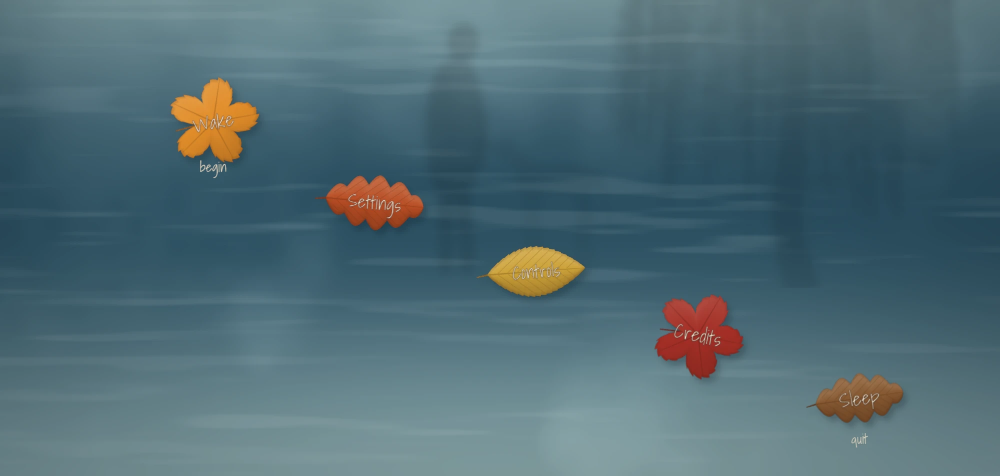
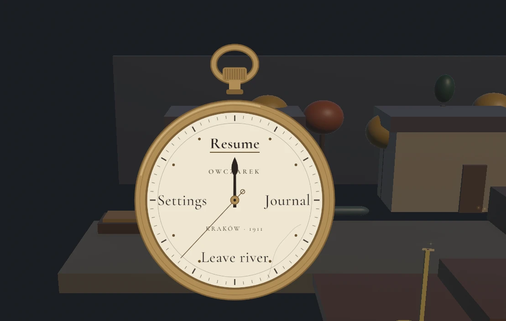
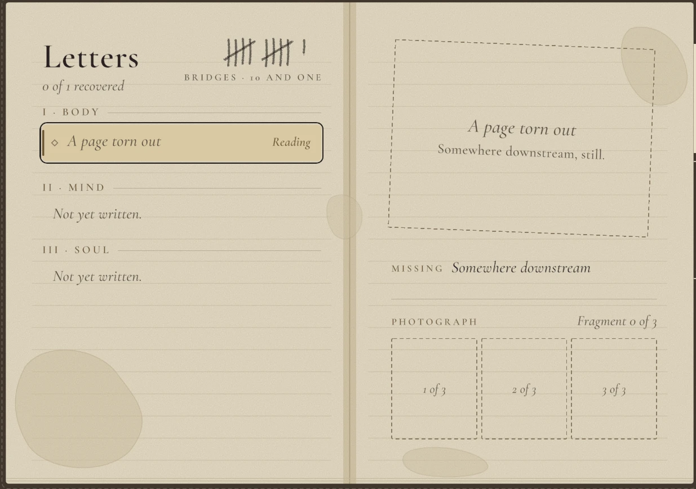

Chapter 01: Argos
Lead UI/UX on a contemplative 3D narrative adventure. Two diegetic menus, designed in Figma and built in Unity: a title menu that looks down into a river, with fallen leaves as buttons, and a pause that stops a pocket watch.
- Role
- Lead UI/UX: design and Unity build
- Engine
- Unity 6, uGUI + TextMeshPro, FMOD
- Input
- Keyboard and mouse, Xbox and PlayStation controllers
- Status
- Vertical slice in development, 2026
Screen Guide: River Menu
Day theme, built in Unity uGUI

- 1. Wake
Begins the game. It sends three pulses out from the leaf, one for each of Cerberus's barks.
- 2. Settings
Subtitles, vibration, motion level, music and effects. The same pages open from the pause.
- 3. Controls
Rebinding leaves for keyboard and controller; each leaf's small word is the current key.
- 4. Credits
Every leaf is a button: it bobs on the current, lifts when focused and flips when pressed.
- 5. Sleep
Quits. Wake and Sleep frame the start and end of the game.
The River Menu, Day theme. Hover an entry to find it on the screen.
A title menu you look down into
The title menu is a river seen from above. Fallen autumn leaves are the buttons and toggles: they bob on the current, lift when focused, and flip when pressed. Sliders are skipping stones, and Back is a rock. It is built to the Figma prototype's spec, on the same 1920×1080 stage with the same formulas and tokens.
- Three rivers, one per stage of the game. Day is an autumn river with a willow and the man reflected in it. Soul is dark water lit by the hound's collar light and fireflies. Night holds stars, a faint aurora and a fractured moon.
- Story in the menu. Wake and Sleep frame the start and end of the game. Wake sends three pulses out from the leaf, one for each of Cerberus's barks. After the first full loop, the hound's reflection slowly surfaces beside the man's.
- Every input is first class. Mouse, keyboard and controller all focus and press the same leaves, and every control except Pause can be rebound from leaves on the Controls pages.


A pause that stops time
Esc or Start stops time, the world dims to 55%, and the protagonist's father's pocket watch slides up. The minute hand points at the focused option: Resume at 12, Journal at 3, Leave river at 6, Settings at 9. Resume plays one tick, the second hand steps six degrees, and the world moves again 240 ms later.
Settings fades into the River Menu, so one settings system serves the title and the pause. The Field Journal is a notebook spread with Letters, Keepsakes and Photos tabs.
Design tone
Minimal and diegetic, in the vein of Gris and Spiritfarer. No gradients, glows or glass, except the Soul act's collar light.
From Figma to Unity
- Colours, geometry, type sizes and motion timings live in one tokens file taken from the Figma source, so a change happens in one place.
- Layout is written in Figma frame pixels, with the same cubic-bezier easing curves as the prototype.
- Menus run on unscaled time, so the same river can sit over a paused game.
- UI sounds are FMOD events shared between the River Menu and the pause, so a sound designer owns them without touching code.
Accessibility
- Three motion levels: full, gentle (the default) and still.
- A Text Size setting (100, 125 and 150%) for dialogue and prompt words.
- Subtitles, vibration, and music and effects volume, all saved between sessions.
- Full rebinding for keyboard and controller.